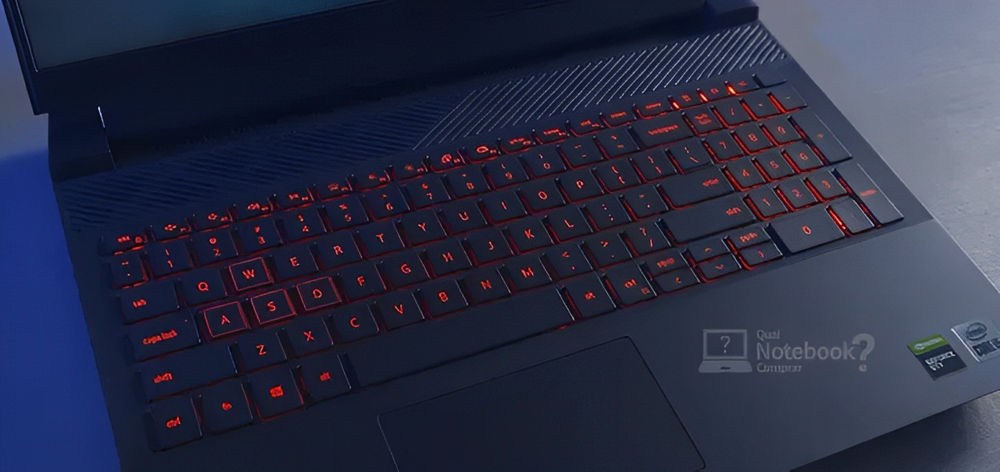
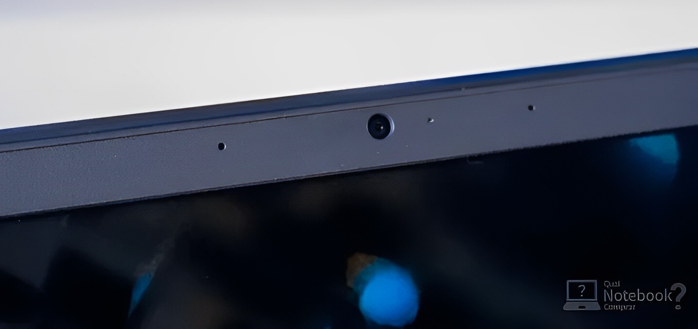
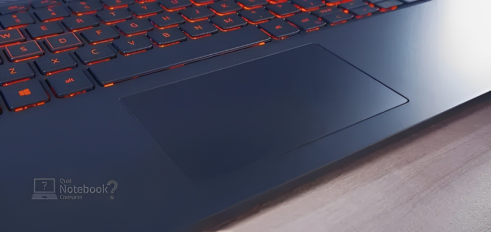
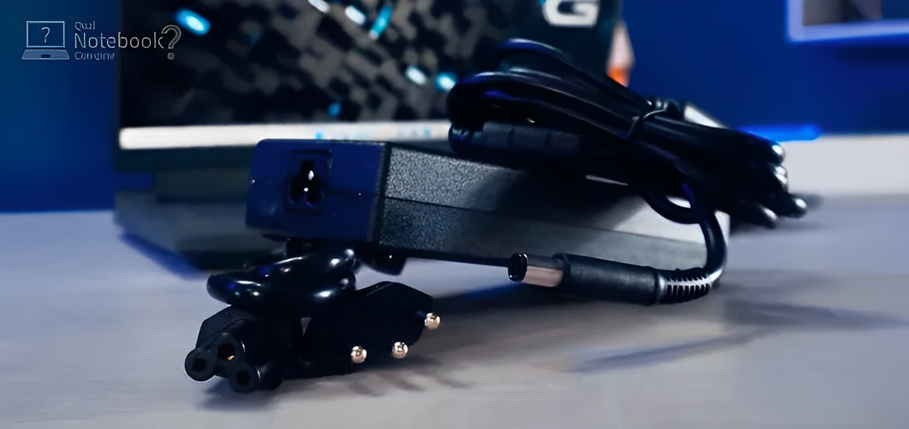
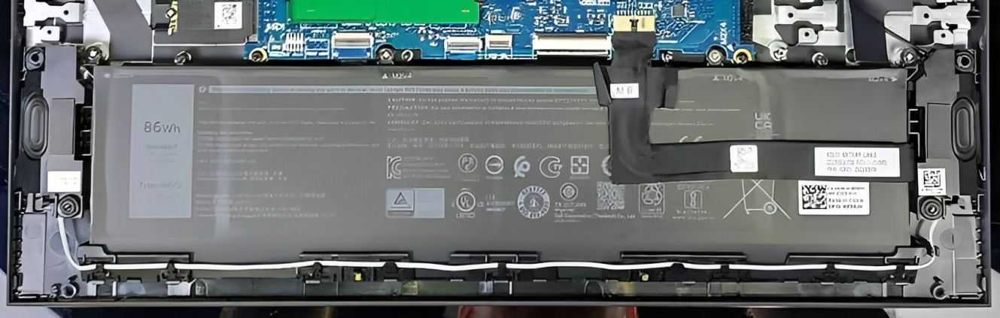

Teclado
| Tipo de teclado | Teclado padrão |
|---|---|
| Teclado iluminado | Teclado retroiluminado RGB de quatro zonas (opcional) |
| Layout do teclado | QWERTY |
| Número de teclas | Estados Unidos e Canadá: 101 chaves |
| Reino Unido: 102 chaves | Japão: 105 chaves |
| Tamanho do teclado | X = passo de chave de 18,70 mm |
| Y = passo de chave de 18,05 mm | |
| Atalhos de teclado | Algumas teclas do teclado têm dois símbolos. Essas teclas podem ser usadas para digitar caracteres alternativos ou para executar funções secundárias. Para digitar o caractere alternativo, pressione Shift e a tecla desejada. Para executar funções secundárias, pressione Fn e a tecla desejada. |
Câmera
| Número de câmeras | Um | |
|---|---|---|
| Tipo de câmera | Câmera HD RGB | |
| Localização da câmera | Câmera frontal | |
| Tipo de sensor da câmera | Tecnologia de sensores CMOS | |
| Resolução da câmera: | ||
| Imagem estática | 0,92 megapixels | |
| Vídeo | 1280 x 720 (HD) a 30 qps | |
| Ângulo de visão diagonal: | 78,6 graus | |
| 74,9 graus | ||
Touchpad
| Resolução do touchpad: | |
|---|---|
| Horizontal | 1229 |
| Vertical | 749 |
| Dimensões do touchpad: | |
| Horizontal | 105 mm (4,13 pol.) |
| Vertical | 60 mm (2,36 pol.) |
| Gestos do Touchpad | Para obter mais informações sobre gestos do touchpad para o Windows, consulte o artigo da base de conhecimento da Microsoft em support.microsoft.com. |
Adaptador de energia
| Tipo | 180W | 240W | |
|---|---|---|---|
| Dimensões do conector: | |||
| Diâmetro externo | 7,40 mm | 7,40 mm | |
| Diâmetro interno | 5,10 mm | 5,10 mm | |
| Tensão de entrada | 100 VCA–240 VCA | 100 VCA–240 VCA | |
| Frequência de entrada | 50 Hz–60 Hz | 50 Hz–60 Hz | |
| Corrente de entrada (máxima) | 2,34 A | 3,5A/ 5A | |
| Corrente de saída (contínua) | 6,23 A | 12.31A | |
| Tensão de saída nominal | 19,50 VCC | 19,50 VCC | |
| Faixa de temperatura: | |||
| De operação | 0°C a 40°C (32°F a 104°F) | 0°C a 40°C (32°F a 104°F) | |
| Armazenamento | -40°C a 70°C (-40°F a 158°F) | -40°C a 70°C (-40°F a 158°F) | |
Bateria
| Tipo de bateria | Íon de lítio "inteligente" de 3 células (56 Wh) | 6 células (86 Wh) de íons de lítio "inteligentes" |
|---|---|---|
| Tensão da bateria | 13,20 VCC | 13,2 VCC /13,35 VCC |
| Peso da bateria (máximo) | 0,25 kg (0,55 lb) | 0,34 kg (0,74 lb) |
| Dimensões da bateria: | ||
| Altura | 7,56 mm (0,3 pol.) | 7,56 mm (0,3 pol.) |
| Largura | 295,20 mm (11,62 pol.) | 295,20 mm (11,62 pol.) |
| Profundidade | 77,50 mm (3,05 pol.) | 77,50 mm (3,05 pol.) |
| Faixa de temperatura: | ||
| De operação | 0°C a 45°C (32°F a 113°F) | 0°C a 45°C (32°F a 113°F) |
| Armazenamento | -20°C a 65°C (-4°F a 149°F) | -20°C a 65°C (-4°F a 149°F) |
| Tempo de operação da bateria | Varia conforme as condições de operação e pode ser significativamente reduzido sob certas condições de uso intenso de energia. | Varia conforme as condições de operação e pode ser significativamente reduzido sob certas condições de uso intenso de energia. |
| Tempo de carga da bateria (aproximado) | 4 horas (quando o computador está desligado) | 4 horas (quando o computador está desligado) |
| Bateria de célula tipo moeda | Não aplicável | Não aplicável |